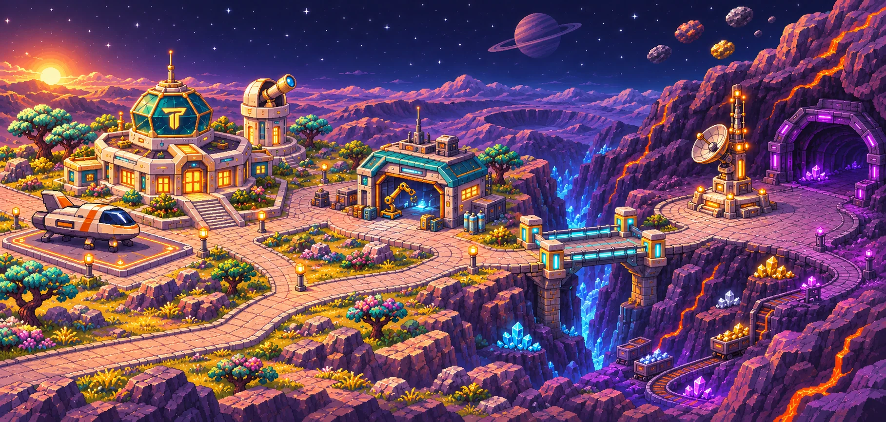
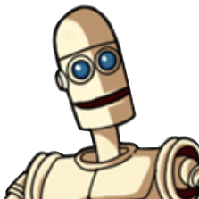

Tvijo
TvijoСолнечный причал
Первая смена
Грузовая капсула за поднятым мостом. Выбери героя и вызови Робота на переправу.
Командный мостик экспедиции Tvijo
Браузер не воспроизвёл голос. Реплика доступна на экране.
Грузовая капсула за поднятым мостом. Выбери героя и вызови Робота на переправу.
Кристальный разлом


Какие поручения ты дал, как связал действия героев и сколько стоила смена.
Бортовой ИИ Tvijo